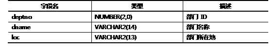
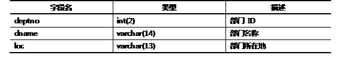
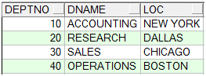

1 下列关于JDBC，说法正确的是
A. JDBC只提供了对Java程序员的API。
B. JDBC只提供了对数据库厂商的API。
C. JDBC只提供了第三方中间件厂商的API。
D. JDBC提供了对Java程序员，数据库厂商及第三方中间件厂商的API。
2 简述JDBC的原理
3 JDBC实现对Dept数据表的简单查询（Oracle）
Oracle数据库中部门dept表的表结构如表－1所示：
表－1部门表dept 信息
部门表 dept中的示例数据，如图－1所示：

图－1
本案例要求使用JDBC连接Oracle数据库，查询dept表的所有部门的ID、部门名称以及部门所在地。
4 下列JDBCURL书写正确的是
A.JDBC连接Oracle数据库的URL为jdbc:oracle:thin:@<主机名>:<端口号(默认1521)>:<实例名>
B．JDBC连接Oracle数据库的URL为oracle:jdbc:thin:@<主机名>:<端口号(默认1521)>:<实例名>
C．JDBC连接MySql数据库的URL为mysql:jdbc://<主机名>:<端口号(默认3306)>/<数据库名>
D．JDBC连接MySql数据库的URL为jdbc:mysql://<主机名>:<端口号(默认3306)>/<数据库名>
5 JDBC实现对Dept数据表的简单查询（MySQL）
Oracle数据库中部门dept表的表结构如表－2所示：
表－2部门表dept 信息
部门表 dept中的示例数据，如图－2所示：

图－2
本案例要求使用JDBC连接MySQL数据库，查询dept表的所有部门的ID、部门名称以及部门所在地。
6 根据下列SQLException信息判断可能出现的错误
请看下列异常：
1.java.sql.SQLException:列名无效
2.java.sql.SQLException:ORA-00911：无效字符
3.java.sql.SQLException:无法转换为内部表示
发生上述异常的原因是什么？